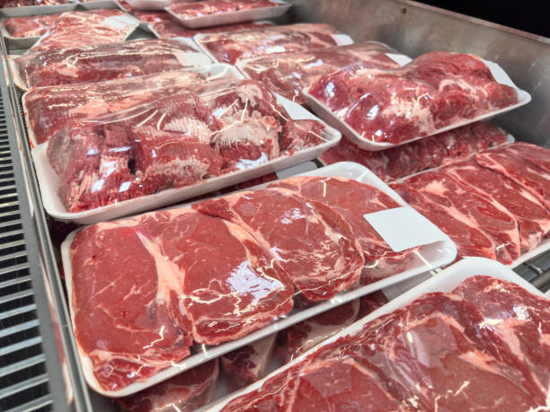
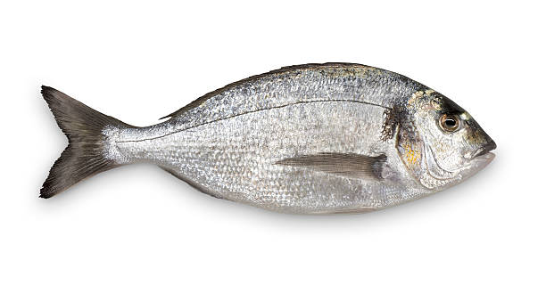
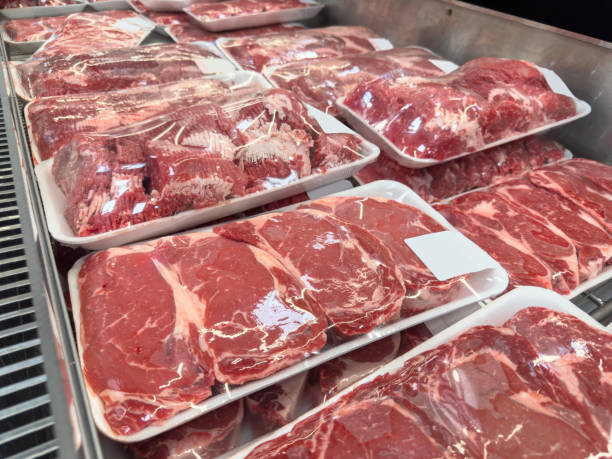
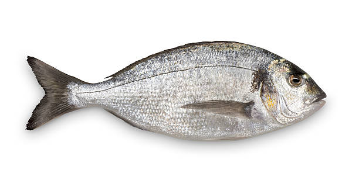
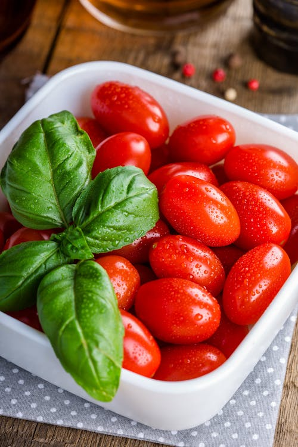
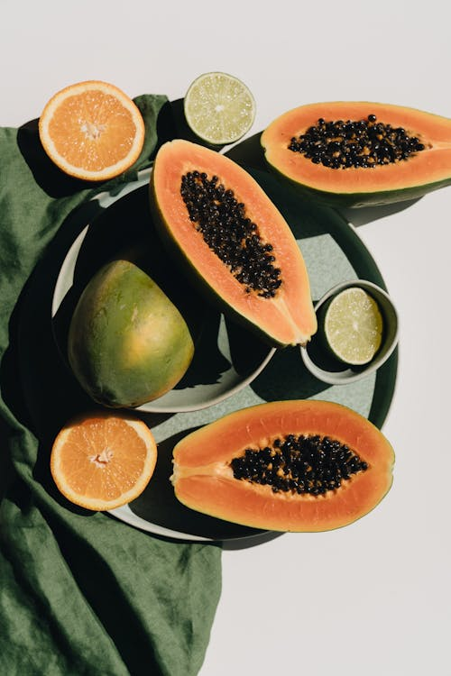
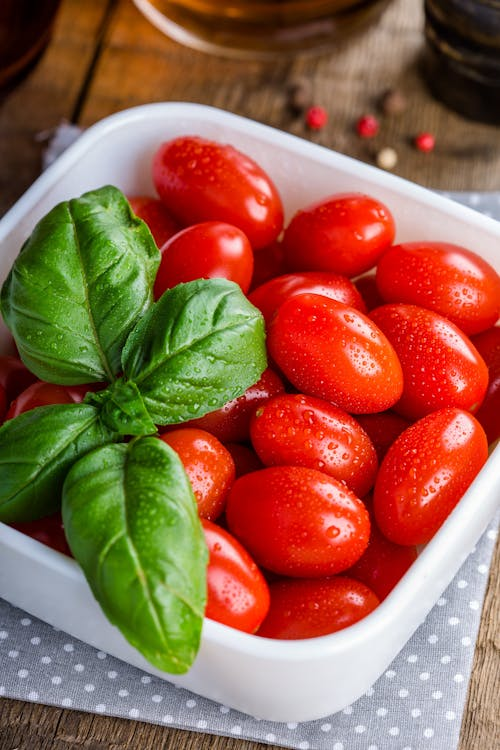
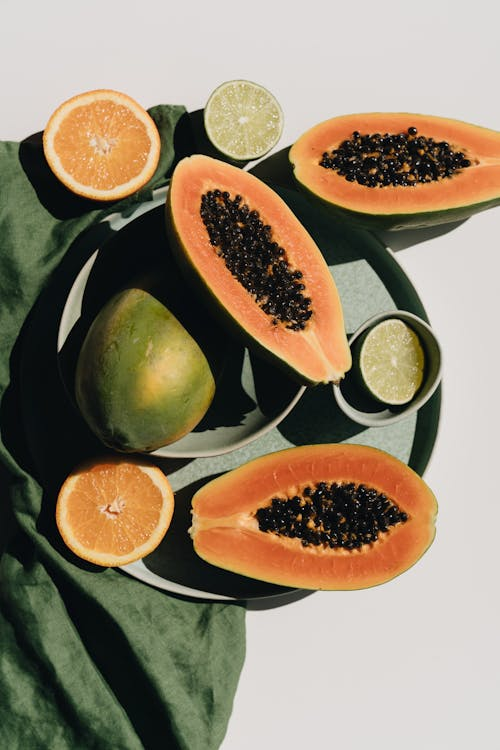
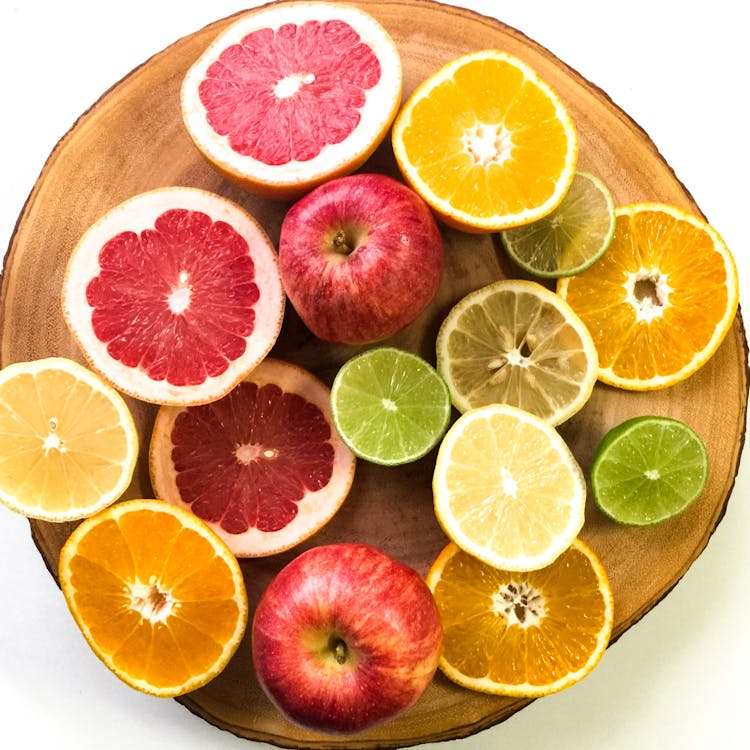
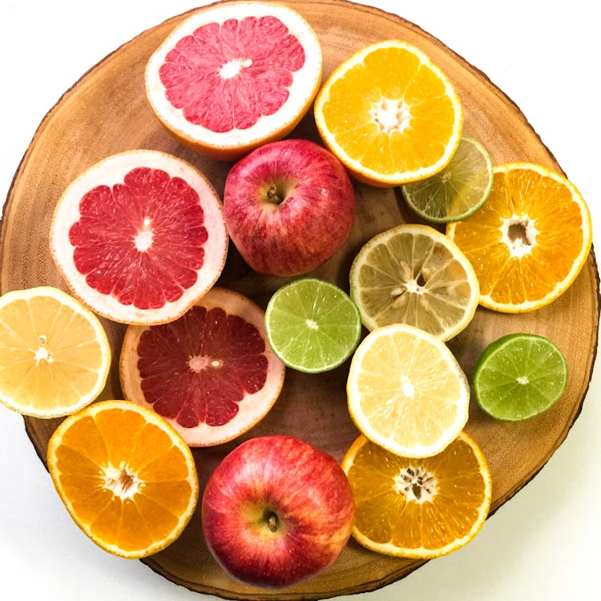

Classes of Food
1. Protein
2. Carbohydrates
3. Fat
4. Minerals
5. Vitamins
6. Water
PROTEIN
* Proteins provide many of the structural elements of a cell, and they help to bind cells together into tissues. Proteins, in the form of antibodies, protect animals from disease, and many hormones are proteins. Proteins control the activity of genes and regulate gene expression.
A. fish
B. meat
C. egg
 



CARBOHYDRATES
* Carbohydrates, or carbs, are the sugars, starches, and dietary fiber that occur in certain foods. The body breaks them down into glucose, which provides energy.
A. Rice
B. Corn
C. Cassava


FAT
* A small amount of fat is an essential part of a healthy, balanced diet. Fat is a source of essential fatty acids, which the body cannot make itself. Fat helps the body absorb vitamin A, vitamin D and vitamin E. These vitamins are fat-soluble, which means they can only be absorbed with the help of fats.
A. Cheese
B. Butter
C. Palm-oil


MINERALS
* Mineral is a nutrient that is needed in small amounts to keep the body healthy. Mineral nutrients include the elements calcium, magnesium, and iron.
A. Nuts
B. Vegetable
C. Fruits
 



VITAMINS
* Vitamins are organic molecules that are essential to an organism in small quantities for proper metabolic function. Essential nutrients cannot be synthesized in the organism in sufficient quantities for survival, and therefore must be obtained through the diet
A. Berries
B. Citrus
C. Green Vegetables
 


WATER
* Drinking water or potable water is water that is safe for ingestion, either when drunk directly in liquid form or consumed indirectly through food preparation. It is often supplied through taps, in that case, it is also called tap water
A. Mineral water
B. Alkaline water
C. Spring water